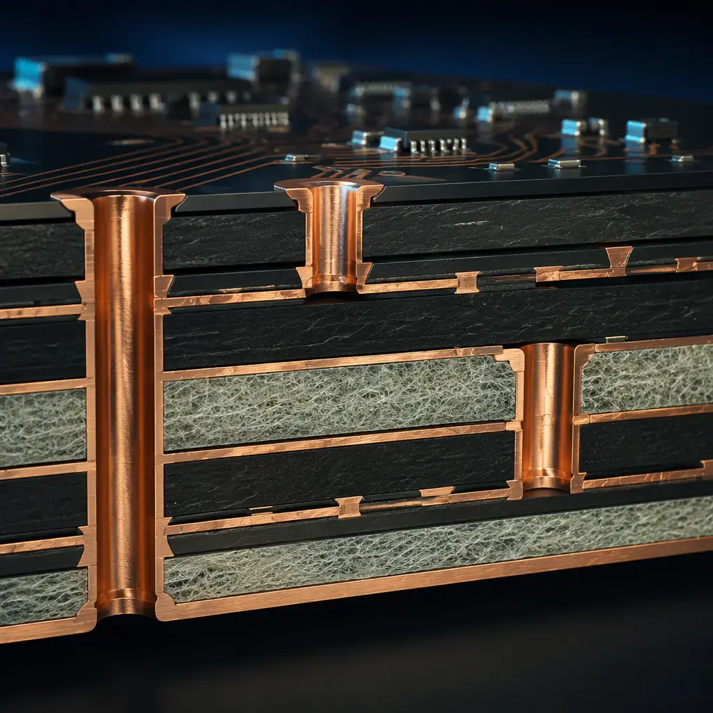
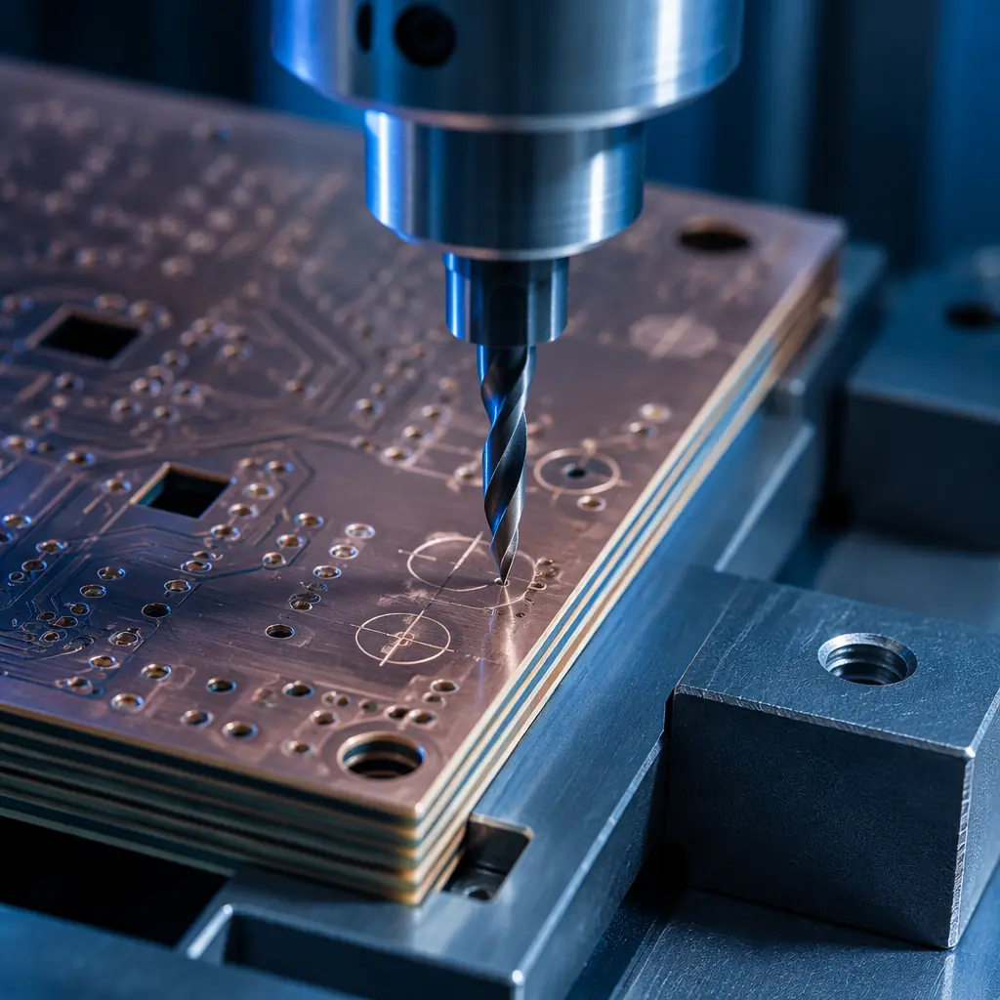
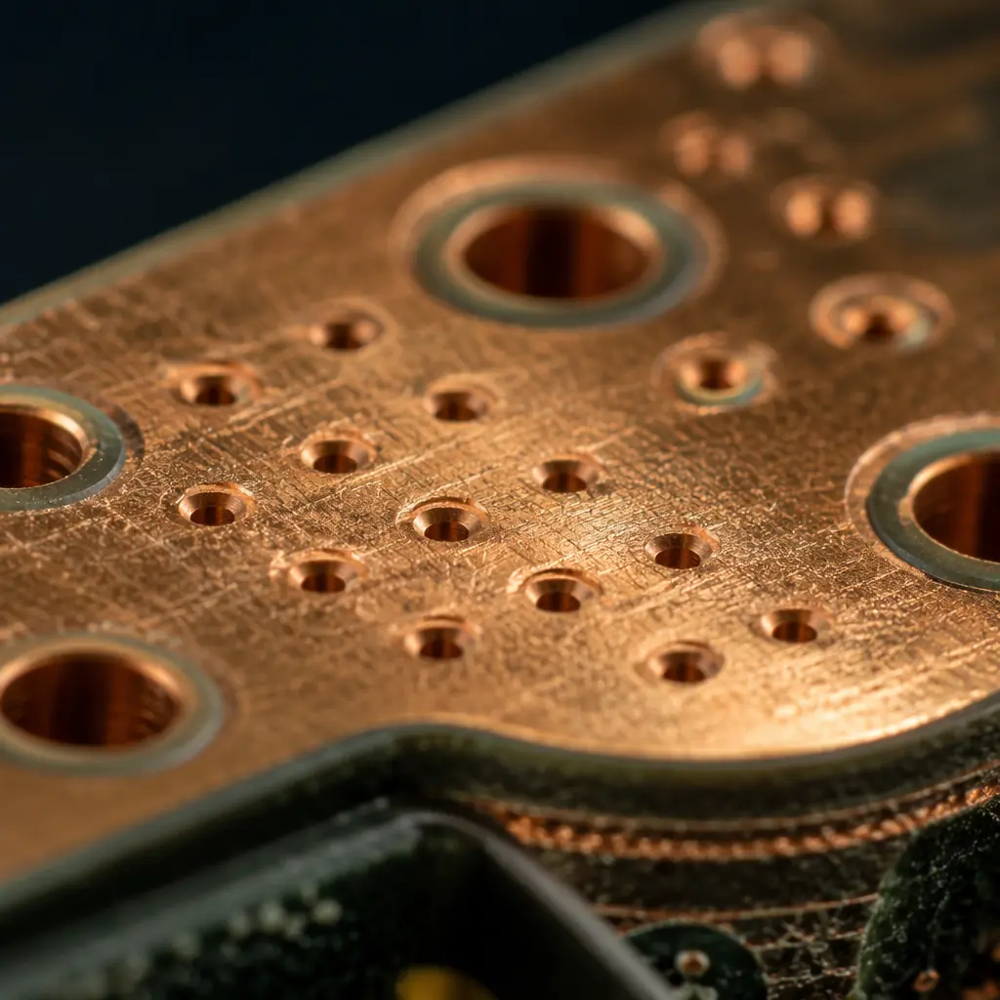

PCB Fabrication / Back Drilling
Controlled-depth drilling removes unused via stubs that cause signal reflections and degrade eye diagrams at data rates above 5 Gbps. Essential for 5G infrastructure, 100G/400G data center, and high-speed FPGA designs. Depth tolerance 50 m, X-ray verified on every board.
The Via Stub Problem
In a multilayer PCB, a plated through-hole (PTH) via extends through the entire board stack. If a signal only travels between layers 1 and 3 of a 16-layer board, the via segment from layer 3 to layer 16 is an unused "stub." At data rates above 5 Gbps, this stub acts as an unterminated transmission-line branch, causing signal reflections, resonant nulls at quarter-wavelength frequencies, and degraded eye diagrams. Back drilling removes this stub by drilling out the unused portion of the via barrel from the opposite side — leaving only the electrically necessary length.

Technical Specifications
| Parameter | Specification |
|---|---|
| Drill Type | Mechanical CNC, controlled depth with precision depth collar |
| Back Drill Diameter | Original hole diameter + 0.15mm to 0.30mm oversize |
| Depth Tolerance | ±50µm (standard), ±75µm for cost-optimized designs |
| Remaining Stub Length | 50-150µm typical; shorter stubs require tighter process control |
| Layer Range | 8-32 layers (back drilling requires sufficient stack thickness) |
| Via Types Supported | PTH, blind vias, stacked microvias on through-hole back-drilled locations |
| Post-Drill Inspection | 100% X-ray verification; cross-section on first article |
| Data Format | Separate back-drill file specifying drill layers, diameters, and depths |
| Finish After Drill | Standard ENIG/HASL/OSP; back-drilled holes receive same finish as PTH |
| Burr Control | Dedicated entry/exit material; burr height <25µm post-process |
Applications
Any design with high-speed serial links running through multiple PCB layers can benefit from back drilling. The performance gain becomes critical above 10 Gbps per lane, where even a short via stub can create a resonant notch within the signal bandwidth. Modern SerDes standards demand back drilling as a standard design practice.

| Inspection Stage | Method | Coverage | What We Check |
|---|---|---|---|
| Depth Verification | X-Ray imaging | 100% of back-drilled holes | Stub length within tolerance; no under-drill (stub too long) or over-drill (damaged signal layer) |
| Diameter Check | AOI + mechanical pin gauge | 100% AOI; sample pin gauge | Back drill diameter matches spec; hole roundness within IPC limits |
| Cross-Section | Microsection analysis | First article; 1 coupon per panel | Stub length measured optically; copper barrel integrity; no resin smear or delamination |
| Electrical Test | Flying probe or fixture | 100% | No opens or shorts on back-drilled nets; via resistance within spec |
| Burr Inspection | Visual + microscope | 100% visual; sample microscope | Burr height under 25 m; no lifted pads at back-drill entry side |
Send us your stackup diagram and high-speed net list. Our engineering team will identify which vias need back drilling, calculate optimal drill depths, and provide a complete DFM report before production. Free back-drill feasibility review on every project.

Upload Gerber + BOM — 24h quote with free DFM review.